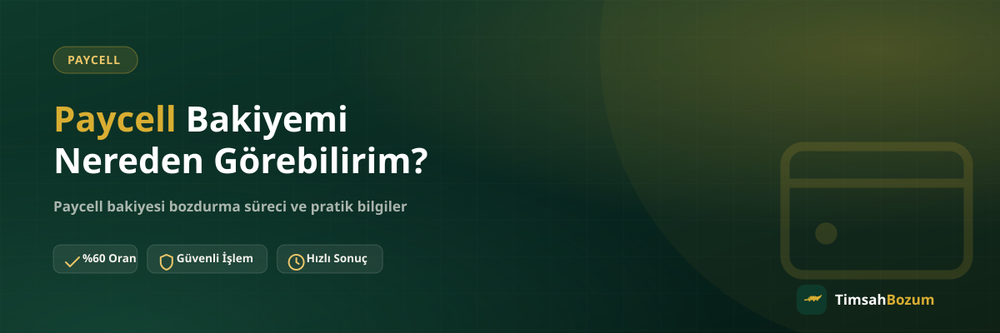

Paycell bozdurmak için ilk adım, elindeki bakiyeyi doğru ve güncel şekilde görebilmek. Uygulama içinde birden fazla ekranda farklı tutarlar görünebildiği için "bakiyem nerede, hangisi gerçek rakam" sorusu sık soruluyor. Bu yazıda bakiyeni nereden kontrol edebileceğini ve bozum öncesi hangi görüntüyü hazırlaman gerektiğini anlatıyoruz.
Paycell Bakiyesi Uygulamanın Hangi Ekranında Görünür?
Paycell uygulamasını açtığında ana sayfada, genellikle üst kısımda cüzdan bakiyeni görürsün. Bu, uygulamanın seni karşılayan ilk ve en görünür rakamdır. Aynı ekrandan veya menüden Paycell Kart'a bağlı bakiyeye de ayrıca ulaşabilirsin; bu ikisi farklı ekranlarda ayrı ayrı gösterilir, bu yüzden "bakiyem" dediğinde hangisinden bahsettiğini bilmek önemlidir.
Cüzdan Bakiyemi Nasıl Görürüm?
Uygulamayı açtığında giriş yaptıktan sonra ana ekranda cüzdan bakiyen doğrudan görünür. Bazı güncellemelerde bu rakam "Bakiyeniz" veya "Cüzdan" başlığı altında yer alır. Ekranı yenilemek (sayfayı aşağı çekip bırakmak) en son işlemlerin de bakiyeye yansımış olduğundan emin olmanı sağlar.
Kart Bakiyemi Nasıl Görürüm?
Paycell Kart bakiyesi için uygulama içindeki kart bölümüne girmen gerekir; burada kartına özel ayrı bir tutar görürsün. Bu rakam cüzdandaki ana bakiyeden farklı olabilir, çünkü kart kendi bakiyesini taşır. Bozum için hangi bakiyeyi değerlendirmek istiyorsan, o ekranın görüntüsünü almanı öneririz.
İşlem Geçmişinden Bakiye Kontrolü Mümkün mü?
Uygulamanın işlem geçmişi veya hareketler bölümü, son yüklemeleri ve harcamaları sırayla gösterir ama güncel toplam bakiye için en güvenilir yer hâlâ ana ekran veya kart ekranıdır. İşlem geçmişi, bir tutarın ne zaman ve nereden geldiğini doğrulamak istediğinde faydalı bir ek kaynak olarak kullanılabilir.
SMS veya Bildirim ile Bakiye Takibi Yapılır mı?
Paycell'e bir yükleme yapıldığında veya bakiyenden bir tutar düştüğünde çoğu zaman bildirim ya da SMS alırsın. Bu bildirimler bakiyenin değiştiğini gösterir ama güncel toplam tutarı en doğru şekilde uygulama ekranından görmek daha sağlıklı. SMS'teki bilgiyi tek başına referans almak yerine, uygulamayı açıp anlık ekran görüntüsü almanı öneririz.
Ekran Görüntüsü Alırken Neye Dikkat Etmeli?
Bozum için paylaşacağın ekran görüntüsünde bakiye tutarının ve mümkünse tarih/saat bilgisinin net görünmesi işlemi hızlandırır. Bulanık veya kesik bir görüntü, karşı taraftaki hattın tutarı doğrulamasını geciktirebilir. Hangi ekranı gönderdiğini (cüzdan mı kart mı) kısaca belirtmen de süreci kolaylaştırır. Güncel oranı ve süreci teyit etmek için Paycell bozdurma sayfamıza da göz atabilirsin.
Bakiyem Negatif veya Sıfır Görünüyorsa Ne Olur?
Bakiye ekranında sıfır veya hiç tutar görünmüyorsa, o anda bozdurulabilecek bir bakiye yok demektir. Bu durumda uygulamanın güncellendiğinden ve doğru hesapla giriş yaptığından emin olman faydalı olur. Gerçek bir bakiyen olduğunu düşünüyor ama ekranda görmüyorsan, önce uygulamayı kapatıp yeniden açmayı deneyebilirsin.
Farklı Bir Telefondan Giriş Yaparsam Bakiyem Değişir mi?
Hayır, Paycell bakiyesi hesabına bağlıdır, cihaza değil. Aynı hesaba hangi telefondan giriş yaparsan yap aynı cüzdan ve kart bakiyesini görürsün. Telefonunu değiştirdiysen veya uygulamayı yeni kurduysan, ilk açılışta bakiyenin yüklenmesi birkaç saniye sürebilir; bu durumda sayfayı yenilemek genellikle yeterli olur.
Tarayıcıdan (Web) Bakiye Görüntülenebilir mi?
Paycell'in resmi mobil uygulaması, bakiyeni görmek için en güvenilir ve güncel kaynaktır. Bazı işlemler için web üzerinden erişim sunulsa da, bozum öncesi paylaşacağın ekran görüntüsünü doğrudan uygulamadan almanı öneririz; bu, hem görüntünün netliği hem de bakiyenin güncelliği açısından daha sağlıklı sonuç verir.
Yeni Bir Yükleme Yaptıktan Sonra Bakiye Ne Zaman Güncellenir?
Bir yükleme veya transfer sonrası bakiyenin uygulamada görünmesi genellikle kısa sürer, ama bu süre işlemi yapan bankaya veya yükleme yöntemine göre değişebilir. Bozum öncesi paylaşacağın görüntünün, yaptığın en son işlemi de yansıttığından emin olmak için uygulamayı kapatıp yeniden açman veya sayfayı yenilemen faydalı olur. Güncel olmayan bir görüntü paylaşman işlemi iptal etmez ama doğru tutarın teyit edilmesi için ek bir adım gerektirebilir.
Birikmiş Küçük Tutarları Da Bozdurabilir miyim?
Bakiye tabanlı bir hizmet olduğu için Paycell'de zaman içinde birikmiş küçük tutarlar da toplam bakiyenin bir parçası olarak görünür ve bozum için değerlendirilebilir. Önemli olan, bozdurmak istediğin anda ekranda görünen toplam tutarı net şekilde paylaşman; tutarın hangi işlemlerden birikip oluştuğu bozum süreci için ayrıca bir bilgi gerektirmez.
Bakiyemi Görmek İçin Hesabıma Erişim Vermem Gerekir mi?
Hayır, bakiyeni görmek tamamen kendi telefonunda, kendi uygulamanda gerçekleşen bir işlem. Bize ihtiyacın olan tek şey, gördüğün ekranın bir görüntüsü; hesabına erişim, şifre veya SMS doğrulama kodu hiçbir aşamada istenmez. Böyle bir talep gelirse bunun resmi hattımızla ilgisi olmadığını bilmen önemli.
Bakiyeni doğru ekrandan kontrol ettikten sonra, güncel görüntüyle WhatsApp hattımıza yazarak oranı teyit edebilir ve işlemini başlatabilirsin.
İlgili Yazılar
- Paycell Bakiyesi Nasıl Oluşur, Nereden Gelir?
- Paycell Kart Bakiyesi ile Cüzdan Bakiyesi Aynı mı?
- Paycell Bakiyesi Bozdururken Sık Yapılan Hatalar